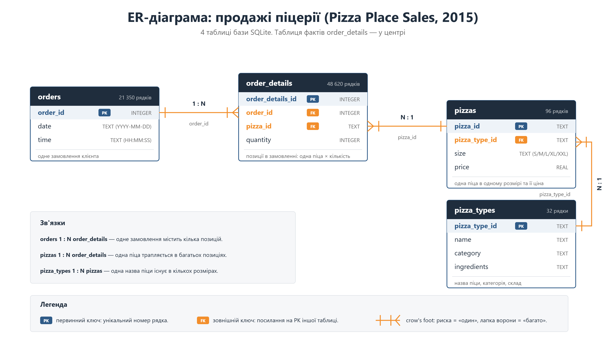
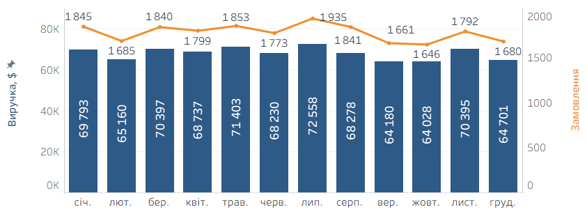
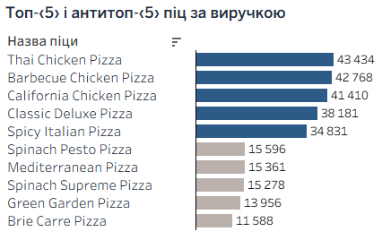
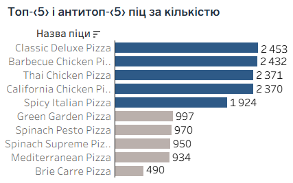
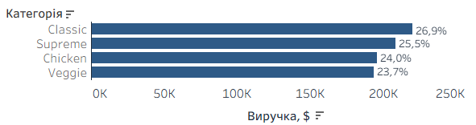
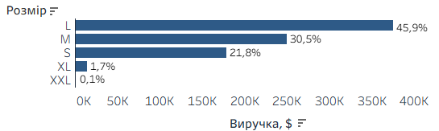
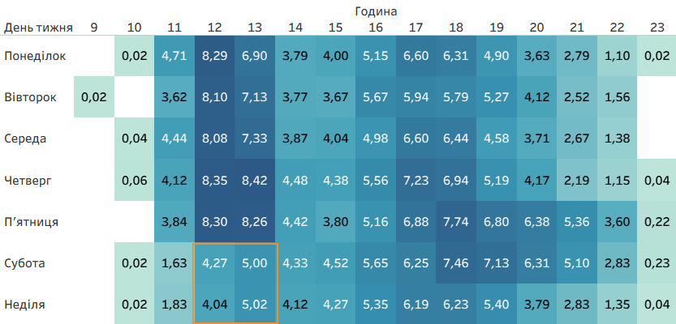

Аналіз продажів піцерії за 2015 рік
Де піцерія заробляє, а де втрачає: рішення щодо графіка змін, меню та акцій.
Період аналізу: 01.01.2015 – 31.12.2015
Результат: висновки з конкретними цифрами та інтерактивний дашборд із фільтрами.
Ситуація
Рік даних у касі є, рішень на їх основі — немає
Піцерія в Нью-Джерсі, придбана наприкінці 2015 року, має касові дані за повний рік: 21 350 замовлень із деталізацією до окремої позиції, дати й часу. Ці дані досі не використовувались для управлінських рішень. Завдання аналізу — оцінити поточний стан продажів, визначити обмеження та зони втрат. Ціль — три обґрунтовані рішення на січень: графік змін, скорочення меню, цільова промо-кампанія.
Ключові питання
- Основні KPI продажів за рік: виручка, замовлення, кількість піц, середній чек.
- Динаміка виручки та замовлень по місяцях, оцінка сезонності.
- Інтенсивність замовлень за днями тижня та годинами: піки й спади навантаження.
- Лідери та аутсайдери меню за виручкою і за кількістю продажів.
- Структура продажів за категоріями та розмірами піц.
- Оптимізація меню: кандидати на вилучення та оцінка ризику для виручки.
- Роль великих замовлень (від 4 піц) у виручці та потенціал корпоративного сегмента.
- Вибір вікна для промо-кампанії та оцінка її фінансового потенціалу.
Дані
Чотири пов'язані таблиці, 48 620 позицій, один повний рік
Джерело
- Pizza Place Sales: продажі піцерії за 2015 рік у чотирьох пов'язаних CSV-файлах
- Період: 01.01.2015 – 31.12.2015, рік повний, дат поза 2015 роком немає
- Інструменти: SQLite Online (SQL-аналіз), Tableau Public (дашборд)
Таблиці
- orders — 21 350 рядків: одне замовлення в рядку, дата й час
- order_details — 48 620 рядків: позиції замовлень, піца і кількість
- pizzas — 96 рядків: піца певного розміру (S, M, L, XL, XXL) і ціна
- pizza_types — 32 рядки: назва в меню, категорія, інгредієнти
ER діаграма

Усі зв'язки один до багатьох: order_details посилається на orders і на pizzas, pizzas — на pizza_types; ключі унікальні, осиротілих записів немає.
Підготовка
Дані виявилися чистими — очищення не знадобилося
Перевірка якості
- Структура й типи: назви колонок, числові price і quantity
- Пропуски: NULL і порожні значення в усіх колонках
- Ключі та зв'язки: унікальність ID, посилання без запису
Результат перевірки
- Пропусків немає, усі ID унікальні
- Осиротілих рядків 0 в усіх чотирьох перевірках
- price — REAL, quantity — INTEGER; період 2015-01-01 … 2015-12-31 без некоректних дат
Підготовка для Tableau
- Вибірка sales_lines з чотирьох таблиць: рядок — позиція замовлення
- Додано month, weekday, hour, revenue (ціна × кількість)
- Tableau Public не читає SQLite напряму — вибірку вивантажено в CSV
- Контроль: 48 620 рядків, як в order_details — дублів немає
Дані чисті — очищення не потрібне, одразу перейшли до аналізу. CAST використано лише там, де ціле ділиться на ціле.
Питання 1 / 8
Базова лінія: 817 860 $ виручки за 21 350 замовлень, середній чек 38,31 $
Піцерія стабільно продає приблизно 58 замовлень на день із середнім чеком 38 $ — це міцна база, але майже вся виручка складається з невеликих замовлень на дві-три піци, тож резерв зростання лежить не в кількості гостей, а в тому, що саме і коли вони замовляють.
SELECT
ROUND(SUM(p.price * od.quantity)) AS revenue,
COUNT(DISTINCT od.order_id) AS orders,
SUM(od.quantity) AS pizzas_sold,
ROUND(SUM(p.price * od.quantity) / COUNT(DISTINCT od.order_id), 2) AS avg_order_value,
-- CAST потрібен (ціле / ціле) в SQLite відкидає дробову частину
ROUND(CAST(SUM(od.quantity) AS REAL) / COUNT(DISTINCT od.order_id), 2) AS avg_pizzas_per_order
FROM order_details AS od
JOIN pizzas AS p USING(pizza_id);revenue orders pizzas_sold avg_order_value avg_pizzas_per_order
817860 21350 49574 38.31 2.32Питання 2 / 8
Вираженої сезонності немає: розрив між місяцями лише 13,3 %
Усі дванадцять місяців укладаються в 64–73 тис. $, а кількість замовлень рухається разом із виручкою — отже, середній чек протягом року майже не змінюється: сильний місяць означає більше гостей, а не більші чеки. Під такі коливання не варто підлаштовувати ні закупівлю, ні графік персоналу — різницю треба шукати всередині тижня, а не між місяцями.
SELECT
strftime('%m', o.date) AS month,
ROUND(SUM(p.price * od.quantity)) AS revenue,
COUNT(DISTINCT o.order_id) AS orders
FROM orders AS o
JOIN order_details AS od USING(order_id)
JOIN pizzas AS p USING(pizza_id)
GROUP BY month
ORDER BY month;
-- Зміна до попереднього місяця у відсотках (LAG)
WITH monthly_values AS (
SELECT
strftime('%m', o.date) AS month,
SUM(p.price * od.quantity) AS revenue,
COUNT(DISTINCT o.order_id) AS orders
FROM orders AS o
JOIN order_details AS od USING(order_id)
JOIN pizzas AS p USING(pizza_id)
GROUP BY month
)
SELECT
month,
ROUND(revenue) AS revenue,
orders,
ROUND((revenue - LAG(revenue) OVER (ORDER BY month)) * 100.0
/ LAG(revenue) OVER (ORDER BY month), 1) AS revenue_mom_pct,
ROUND((orders - LAG(orders) OVER (ORDER BY month)) * 100.0
/ LAG(orders) OVER (ORDER BY month), 1) AS orders_mom_pct
FROM monthly_values
ORDER BY month;

Питання 3 / 8
Пік — будній обід: о 12:00 будні дають 8,2 замовлення на годину, вихідні — 4,2
Навантаження розривається не між місяцями, а між буднями й вихідними. У будні піцерія живе з обіднього піку о 12:00–13:00, на вихідних цього піку немає, і трафік зсувається у вечір п'ятниці та суботи. Звідси два окремі висновки: графік змін будується за цією картою, а обідні години вихідних — готове вікно для акції.
-- Замовлення за днями тижня
SELECT
(CAST(strftime('%w', date) AS INTEGER) + 6) % 7 AS sort_nr,
CASE strftime('%w', date)
WHEN '1' THEN 'Monday'
WHEN '2' THEN 'Tuesday'
WHEN '3' THEN 'Wednesday'
WHEN '4' THEN 'Thursday'
WHEN '5' THEN 'Friday'
WHEN '6' THEN 'Saturday'
WHEN '0' THEN 'Sunday'
END AS weekday,
COUNT(*) AS orders,
COUNT(DISTINCT date) AS days_count,
ROUND(COUNT(*) * 1.0 / COUNT(DISTINCT date), 1) AS orders_per_day
FROM orders
GROUP BY weekday
ORDER BY sort_nr;
-- Замовлення за годинами
SELECT
strftime('%H', time) AS hour,
COUNT(*) AS orders,
ROUND(COUNT(*) * 1.0 / (SELECT COUNT(DISTINCT date) FROM orders), 1) AS orders_per_day
FROM orders
GROUP BY hour
ORDER BY hour;
Питання 4 / 8
Лідери за грошима і за штуками різні, аутсайдер один — Brie Carre
Рейтинги за грошима і за штуками не збігаються: Hawaiian і Pepperoni у топ-5 за кількістю, але не за виручкою — їх беруть часто, бо вони дешеві. Унизу хвіст плоский: поруч із Brie Carre ще п'ять піц у межах 11,6–15,9 тис. $, тож кого саме прибрати, виручка не підказує — потрібен другий критерій, і його дає питання 6.
-- Топ-5 піц за виручкою
SELECT
pt.name AS pizza_name,
ROUND(SUM(p.price * od.quantity)) AS revenue,
SUM(od.quantity) AS quantity
FROM order_details AS od
JOIN pizzas AS p USING(pizza_id)
JOIN pizza_types AS pt USING(pizza_type_id)
GROUP BY pt.pizza_type_id, pt.name
ORDER BY SUM(p.price * od.quantity) DESC
LIMIT 5;
-- Останні 5 піц за виручкою
SELECT
pt.name AS pizza_name,
ROUND(SUM(p.price * od.quantity)) AS revenue,
SUM(od.quantity) AS quantity
FROM order_details AS od
JOIN pizzas AS p USING(pizza_id)
JOIN pizza_types AS pt USING(pizza_type_id)
GROUP BY pt.pizza_type_id, pt.name
ORDER BY SUM(p.price * od.quantity) ASC
LIMIT 5;
-- Топ-5 піц за кількістю
SELECT
pt.name AS pizza_name,
SUM(od.quantity) AS quantity,
ROUND(SUM(p.price * od.quantity)) AS revenue
FROM order_details AS od
JOIN pizzas AS p USING(pizza_id)
JOIN pizza_types AS pt USING(pizza_type_id)
GROUP BY pt.pizza_type_id, pt.name
ORDER BY SUM(od.quantity) DESC
LIMIT 5;
-- Останні 5 піц за кількістю
SELECT
pt.name AS pizza_name,
SUM(od.quantity) AS quantity,
ROUND(SUM(p.price * od.quantity)) AS revenue
FROM order_details AS od
JOIN pizzas AS p USING(pizza_id)
JOIN pizza_types AS pt USING(pizza_type_id)
GROUP BY pt.pizza_type_id, pt.name
ORDER BY SUM(od.quantity) ASC
LIMIT 5;


Питання 5 / 8
Категорії рівні між собою, розміри — ні: L дає 45,9 % виручки
Категорії розподілені майже рівно, тож скорочувати меню треба окремими піцами, а не цілими категоріями. Розміри, навпаки, нерівні: L дає 45,9 % виручки при 38,2 % штук — це дорожча піца, яку беруть найохочіше, тоді як XL і XXL разом не дотягують до 2 % і їх варто перевірити на доцільність.
-- Частка виручки кожної категорії
-- Частка = виручка категорії / загальна виручка (через підзапит)
SELECT
pt.category AS category,
ROUND(SUM(p.price * od.quantity)) AS revenue,
SUM(od.quantity) AS quantity,
ROUND(SUM(p.price * od.quantity) * 100.0
/ (
SELECT SUM(p2.price * od2.quantity)
FROM order_details od2
JOIN pizzas AS p2 USING(pizza_id)
),
1) AS revenue_share_pct
FROM order_details AS od
JOIN pizzas AS p USING(pizza_id)
JOIN pizza_types AS pt USING(pizza_type_id)
GROUP BY pt.category
ORDER BY SUM(p.price * od.quantity) DESC;
-- Частка виручки та продажі за розмірами
-- Які розміри продаються найкраще?
SELECT
p.size AS size,
ROUND(SUM(p.price * od.quantity)) AS revenue,
SUM(od.quantity) AS quantity,
ROUND(SUM(p.price * od.quantity) * 100.0
/ SUM(SUM(p.price * od.quantity)) OVER (), 1) AS revenue_share_pct,
ROUND(SUM(od.quantity) * 100.0
/ SUM(SUM(od.quantity)) OVER (), 1) AS quantity_share_pct
FROM order_details AS od
JOIN pizzas AS p USING(pizza_id)
GROUP BY p.size
ORDER BY revenue DESC;


Питання 6 / 8
Три піци до вилучення: 5,24 % виручки під ризиком, мінус 9 інгредієнтів у закупівлі
Прибрати варто Brie Carre, Calabrese і Mediterranean. Виручки для вибору замало: хвіст меню плоский — частки з 2-го по 10-те місце майже однакові (1,71–2,07 %). Вирішив другий критерій — псування: саме ці три піци забирають із закупівлі 9 інгредієнтів, яких немає більше ніде, тоді як Green Garden, Spinach Supreme і Spinach Pesto власних інгредієнтів не мають.
-- Накопичувальна частка виручки (знизу вгору)
-- Скільки виручки зачепить вилучення 1, 2, 3 … найслабших піц
WITH pizza_revenue AS (
SELECT
pt.name AS pizza_name,
SUM(p.price * od.quantity) AS revenue,
SUM(od.quantity) AS quantity
FROM order_details od
JOIN pizzas AS p USING(pizza_id)
JOIN pizza_types AS pt USING(pizza_type_id)
GROUP BY pt.pizza_type_id, pt.name
)
SELECT
RANK() OVER (ORDER BY revenue ASC) AS rank_from_bottom,
pizza_name,
ROUND(revenue) AS revenue,
quantity,
ROUND(revenue * 100.0 / SUM(revenue) OVER (), 2) AS revenue_share_pct,
ROUND(SUM(revenue) OVER (ORDER BY revenue ASC)
* 100.0 / SUM(revenue) OVER (), 2) AS cumulative_share_pct
FROM pizza_revenue
ORDER BY revenue ASC
LIMIT 10;
-- Питання 6c: Інгредієнти кандидатів, яких немає в жодній іншій піці
WITH RECURSIVE split AS (
-- стартовий рядок: ще нічого не відрізано, до залишку додано кому
SELECT pizza_type_id,
name,
'' AS ingredient,
ingredients || ',' AS rest
FROM pizza_types
UNION ALL
-- кожен крок: відрізати текст до першої коми
SELECT pizza_type_id,
name,
TRIM(SUBSTR(rest, 1, INSTR(rest, ',') - 1)),
SUBSTR(rest, INSTR(rest, ',') + 1)
FROM split
WHERE rest <> ''
),
ingredient_list AS (
-- один рядок = одна піца + один інгредієнт
SELECT pizza_type_id, name, ingredient
FROM split
WHERE ingredient <> ''
),
ingredient_usage AS (
-- у скількох піцах трапляється кожен інгредієнт
SELECT ingredient,
COUNT(DISTINCT pizza_type_id) AS pizzas_using
FROM ingredient_list
GROUP BY ingredient
)
SELECT
il.name AS pizza_name,
il.ingredient AS ingredient,
iu.pizzas_using AS pizzas_using
FROM ingredient_list AS il
JOIN ingredient_usage AS iu USING(ingredient)
WHERE iu.pizzas_using = 1
AND il.name IN ('The Brie Carre Pizza',
'The Green Garden Pizza',
'The Spinach Supreme Pizza',
'The Mediterranean Pizza',
'The Spinach Pesto Pizza',
'The Calabrese Pizza',
'The Italian Vegetables Pizza')
ORDER BY il.name;
-- Питання 6d: Скільки виручки зачепить вилучення обраних піц
SELECT
COUNT(DISTINCT pt.pizza_type_id) AS pizzas_removed,
ROUND(SUM(p.price * od.quantity)) AS revenue_affected,
SUM(od.quantity) AS quantity_affected,
ROUND(SUM(p.price * od.quantity) * 100.0
/ (SELECT SUM(p2.price * od2.quantity)
FROM order_details AS od2
JOIN pizzas AS p2 USING(pizza_id)), 2) AS revenue_share_pct
FROM order_details AS od
JOIN pizzas AS p USING(pizza_id)
JOIN pizza_types AS pt USING(pizza_type_id)
WHERE pt.name IN ('The Brie Carre Pizza',
'The Calabrese Pizza',
'The Mediterranean Pizza');
pizzas_removed revenue_affected quantity_affected revenue_share_pct
3 42883 2361 5.24Ексклюзивні інгредієнти кандидатів — ті, яких немає в жодній іншій піці. Три піци до вилучення позначено помаранчевою смужкою.
| Піца | Частка виручки | Ексклюзивні інгредієнти |
|---|---|---|
| Brie Carre | 1,42 % | 5 — Brie Carre Cheese, Caramelized Onions, Pears, Prosciutto, Thyme |
| Calabrese | 1,95 % | 3 — Friggitello Peppers, Pancetta, 'Nduja Salami |
| Mediterranean | 1,88 % | 1 — Plum Tomatoes |
| Italian Vegetables | 1,96 % | 1 — Eggplant |
| Green Garden, Spinach Supreme, Spinach Pesto | 1,71–1,91 % | 0 |
Питання 7 / 8
18,2 % замовлень дають 39,4 % виручки: середній чек 83,14 $ проти 28,35 $
Менш ніж п'ята частина замовлень дає майже 40 % виручки, а середній чек такого замовлення майже втричі вищий за звичайний. Це найдорожчий сегмент гостей, і сьогодні для нього немає жодної окремої пропозиції — ні фіксованого набору, ні знижки від обсягу, ні зручного способу замовити наперед. Варто таку пропозицію зробити: кожне замовлення, переведене з формату 1–3 піци у формат 4+, додає 54,79 $ різниці в чеку.
-- Великі замовлення (4+ піц у замовленні)
WITH order_totals AS (
SELECT
od.order_id,
SUM(od.quantity) AS pizzas_in_order,
SUM(p.price * od.quantity) AS order_revenue
FROM order_details AS od
JOIN pizzas AS p USING(pizza_id)
GROUP BY od.order_id
)
SELECT
CASE
WHEN pizzas_in_order >= 4 THEN '4+ pizzas'
ELSE '1-3 pizzas'
END AS order_size,
COUNT(*) AS orders,
ROUND(COUNT(*) * 100.0 / SUM(COUNT(*)) OVER (), 1) AS orders_share_pct,
ROUND(SUM(order_revenue)) AS revenue,
ROUND(SUM(order_revenue) * 100.0 / SUM(SUM(order_revenue)) OVER (), 1) AS revenue_share_pct,
ROUND(SUM(order_revenue) / COUNT(*), 2) AS avg_order_value
FROM order_totals
GROUP BY order_size;
order_size orders orders_share_pct revenue revenue_share_pct avg_order_value
1-3 pizzas 17470 81.8 495289 60.6 28.35
4+ pizzas 3880 18.2 322571 39.4 83.14Питання 8 / 8
Вікно для акції — вихідний обід: +4 474 $ на рік при зростанні на 10 %
Акція «Weekend-Lunch»: субота й неділя 12:00–14:00, комбо з двох піц розміру L зі знижкою. Вікно вибране не тому, що воно найтихіше взагалі, а тому, що воно просідає на 35–40 % саме відносно буднього обіду — кухня в цей час уже працює, персонал на зміні, тож йдеться про просто́ювальну потужність, а не про нові витрати. Комбо спирається на те, що гості й так замовляють: L дає 46,3 % виручки у вікні, а замовлення від чотирьох піц приносять у середньому 83 $ — у вихідний обід їдять сім'ями й компаніями.
-- Середня виручка за день у кожному вікні
-- «день тижня × часовий слот» — пошук слабких вікон
WITH lines AS (
SELECT
o.date,
strftime('%w', o.date) AS wd,
strftime('%H', o.time) AS hr,
o.order_id,
p.price * od.quantity AS revenue
FROM orders AS o
JOIN order_details AS od USING(order_id)
JOIN pizzas AS p USING(pizza_id)
)
SELECT
(CAST(wd AS INTEGER) + 6) % 7 AS sort_nr,
CASE wd
WHEN '1' THEN 'Monday' WHEN '2' THEN 'Tuesday'
WHEN '3' THEN 'Wednesday' WHEN '4' THEN 'Thursday'
WHEN '5' THEN 'Friday' WHEN '6' THEN 'Saturday'
WHEN '0' THEN 'Sunday'
END AS weekday,
CASE
WHEN hr <= '11' THEN '1: 09-12'
WHEN hr <= '13' THEN '2: 12-14 lunch'
WHEN hr <= '16' THEN '3: 14-17'
WHEN hr <= '19' THEN '4: 17-20 evening'
ELSE '5: 20-24'
END AS time_slot,
COUNT(DISTINCT order_id) AS orders,
ROUND(SUM(revenue)) AS revenue,
ROUND(SUM(revenue)
/ (SELECT COUNT(DISTINCT o2.date)
FROM orders AS o2
WHERE strftime('%w', o2.date) = wd)) AS revenue_per_day
FROM lines
GROUP BY wd, time_slot
ORDER BY sort_nr, time_slot;
-- Потенціал акції «Weekend-Lunch» (сб + нд, 12:00–14:00)
-- Поточна виручка у вікні, ефект +10 %, частка розміру L у вікні
-- Поєднання питань 3 (день × година) і 5 (розміри)
WITH lines AS (
SELECT
o.date,
strftime('%w', o.date) AS wd,
strftime('%H', o.time) AS hr,
o.order_id,
p.size,
p.price * od.quantity AS revenue
FROM orders AS o
JOIN order_details AS od USING(order_id)
JOIN pizzas AS p USING(pizza_id)
)
SELECT
COUNT(DISTINCT order_id) AS window_orders,
ROUND(SUM(revenue)) AS window_revenue,
ROUND(SUM(revenue)
/ (SELECT COUNT(DISTINCT date)
FROM orders
WHERE strftime('%w', date) IN ('0', '6'))) AS revenue_per_day,
ROUND(SUM(revenue) * 0.10) AS uplift_10pct,
ROUND(SUM(revenue) * 1.10) AS revenue_with_uplift,
ROUND(SUM(revenue) * 0.10 * 100.0
/ (SELECT SUM(p2.price * od2.quantity)
FROM order_details AS od2
JOIN pizzas AS p2 USING(pizza_id)), 2) AS uplift_share_of_total_pct,
ROUND(SUM(CASE WHEN size = 'L' THEN revenue ELSE 0 END)
* 100.0 / SUM(revenue), 1) AS l_share_in_window_pct
FROM lines
WHERE wd IN ('0', '6')
AND hr BETWEEN '12' AND '13';

window_orders window_revenue revenue_per_day uplift_10pct revenue_with_uplift uplift_share_of_total_pct l_share_in_window_pct
953 44743 430 4474 49217 0.55 46.3Дашборд
Інтерактивний дашборд: рік, графік змін, меню, акція
Чотири вкладки зверху відповідають трьом рішенням: «Стабільний рік» — підсумки 2015-го, далі «Два піки: обід і вечір», «Прибрати 3 піци» та «Обід у вихідні — найслабше». Фільтри праворуч — місяць, категорія, розмір і Топ-N — перераховують і графіки, і цифри в підзаголовках, тож кожен висновок можна перевірити на вужчому зрізі.

Якщо дашборд не завантажився, перевірте інтернет і оновіть сторінку клавішею F5.
Інсайти
Три знахідки, які визначили рішення
Навантаження рветься всередині тижня, а не між місяцями
Усі дванадцять місяців укладаються в 64–73 тис. $, тоді як о 12:00 будні дають 8,2 замовлення на годину, а вихідні — 4,2: графік змін треба будувати за картою «день × година», а не за сезоном.
Хвіст меню плоский — вибір дають інгредієнти
З 2-го по 10-те місце частки виручки майже однакові (1,71–2,07 %), тож трьох кандидатів на вилучення визначили не гроші, а 9 інгредієнтів, яких немає в жодній іншій піці.
Вихідний обід просідає відносно буднього, а не взагалі
Субота й неділя 12:00–14:00 дають ≈ 430 $ на день проти 631–728 $ у будній обід — кухня в цей час уже працює, тож це готове вікно для акції без нових витрат.
Рекомендація 1 з 3
Будувати графік за картою «день тижня × година»
Навантаження розривається всередині тижня, а не між місяцями. О 12:00 будні дають 8,2 замовлення на годину, вихідні в той самий час — 4,2, удвічі менше; максимум тижня — 8,42 у четвер о 13:00. Вечірній пік 17:00–18:00 є щодня (5,8–7,7), найсильніший у п'ятницю й суботу. Провали: 14:00–15:00 (≈ 4) і після 21:00 з неділі по четвер (менше 3).
Посилений склад: будні 11:30–13:30 і щодня 16:30–19:30; у п'ятницю й суботу вечірню зміну подовжити до 21:30–22:00 (о 20:00–21:00 там ще 5–6 замовлень проти 2–4 в інші дні). Мінімальний склад: 14:00–16:00 і після 21:00 з неділі по четвер. Економію в доларах за касовими даними не порахувати: у вивантаженні немає ні штату, ні ставок — цю цифру дасть зіставлення карти з реальним табелем змін.
Перевірка: накласти фактичний графік змін на теплову карту дашборда — кожна зміна має починатися до піку, а не всередині нього.
Рекомендація 2 з 3
Прибрати з меню Brie Carre, Calabrese і Mediterranean
Виручки для вибору замало: нижче порога 2 % опинилися сім піц, а хвіст меню плоский — частки з 2-го по 10-те місце майже однакові (1,71–2,07 %). Другий критерій — псування інгредієнтів: саме ці три піци забирають із закупівлі 9 інгредієнтів, яких немає в жодній іншій піці. Green Garden, Spinach Supreme і Spinach Pesto теж слабкі, але власних інгредієнтів не мають — їх вилучення закупівлю не скоротить.
Мінус 9 позицій у закупівлі й менше списань. Під ризиком 5,24 % виручки (42 883 $, 2 361 піца за рік) — це верхня межа: частина гостей обере іншу піцу, але даних про перетікання попиту немає.
Перевірка: через два місяці порівняти загальну виручку меню і суму списань. Якщо виручка просіла менше ніж на 5,24 %, попит частково перетік на інші піци.
Рекомендація 3 з 3
Акція «Weekend-Lunch»: сб і нд, 12:00–14:00, комбо з двох піц L
Вікно вибране не тому, що воно найтихіше взагалі, а тому, що просідає на 35–40 % саме відносно буднього обіду: ≈ 430 $ на день проти 631–728 $. Кухня вже працює, персонал на зміні — ідеться про простоювальну потужність, а не про нові витрати. Комбо спирається на те, що гості й так замовляють: L дає 46,3 % виручки у вікні, а замовлення від чотирьох піц — 39,4 % виручки із середнім чеком 83,14 $ проти 28,35 $.
Вікно приносить 44 743 $ за рік; зростання на 10 % — це +4 474 $, або 0,55 % річної виручки, без нових витрат на персонал. Окремо працює сам формат: кожне замовлення, переведене у формат 4+, додає 54,79 $, а приріст цього сегмента на 1 % — +3 226 $ на рік.
Перевірка: через два місяці порівняти середню виручку вікна на день із базовими 430 $ — і окремо простежити, чи не просів при цьому будній обід.
Чесно про дані
Чого ці дані не показують — і що для цього потрібно
Обмеження даних
- Немає даних про персонал: ні кількості людей на зміні, ні ставок, ні тривалості змін. Тому графік ми перебудовуємо за навантаженням, а економію в доларах за цими даними порахувати не можна.
- Немає собівартості й обліку списань. Усі цифри в цій презентації — виручка, а не прибуток; вигода від вилучення трьох піц видно як мінус 9 інгредієнтів у закупівлі, а не як зекономлену суму.
- Немає даних про гостей і канал замовлення — ні повторних візитів, ні поділу на зал, доставку й самовивіз. Тому «сім'ї та компанії» у вихідний обід — це висновок із розміру чека, а не з даних про гостя.
- Замовлення є лише у 358 днях року — у 7 днів їх немає взагалі (найімовірніше свята), але причину дані не показують. Усі показники «на день» рахуються від 358, а не від 365.
- Один рік без порівняння: 2015-й нема з чим зіставити, тож ми бачимо структуру тижня, але не тренд. У даних також немає жодної зміни цін чи попередньої акції — реакцію на знижку можна тільки протестувати, не передбачити.
Наступні кроки
- Передати табель змін і ставки — зведу його з картою «день × година» і назву економію в доларах.
- Додати собівартість інгредієнтів і журнал списань — перерахуємо меню за маржею, а не за виручкою, і підтвердимо вигоду від вилучення трьох піц.
- Запустити «Weekend-Lunch» як тест на два місяці з фіксованими умовами знижки — порівняти вікно з базовими 430 $ на день і перевірити, чи не просів будній обід.
- Повторити аналіз на даних 2016 року — тоді зміни в меню й акцію можна буде оцінити порівнянням, а не припущенням.
Дякую за увагу